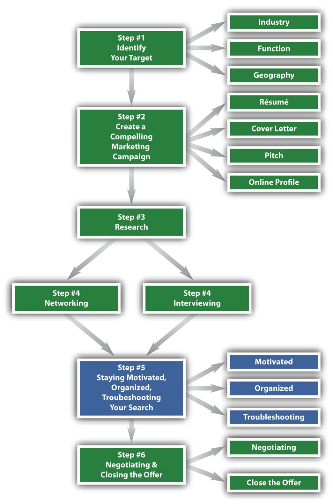
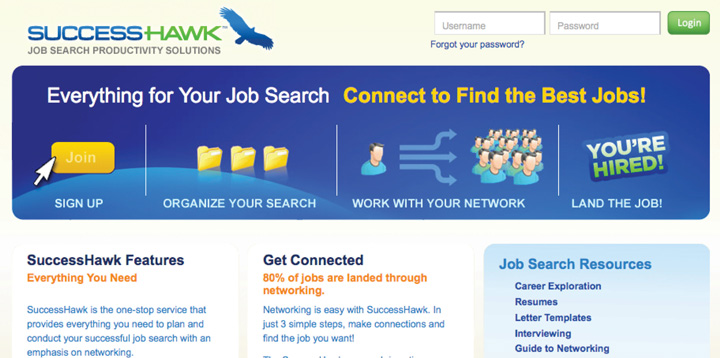

Figure 9.1 The Six-Step Job Search Process: Step 5
What Do We Mean by Stay Motivated and Organized and Troubleshoot Your Search?
At this point in your search, you have taken the following four steps:
This chapter will discuss the different types of motivation and strategies for maintaining that motivation, how to develop organizational systems that work best with your style, and ways in which to troubleshoot your search.
Many job seekers slow down at this stage, right when the job search should instead be heating up. The job seeker has fun with the blank slate of targeting—envisioning his or her likes and dislikes. Marketing is tangible, and the job seeker feels productive, diligently putting together a résumé. In addition, a job seeker can read about companies and industries on his or her own schedule, at home, perhaps before bed, or after a tiring day at school or work. Getting in front of other people, however, and going beyond the awkwardness of networking with strangers or near strangers is hard work for a lot of job seekers. Yet this is the meaty part of the search, and a good job search should devote the bulk of time to the networking stage. As a job seeker, you will need to stay motivated throughout your job search, but especially in this critical networking and interviewing phase.
This chapter talks about the two types of motivation you will need and strategies for how to become and stay motivated. You will explore answers to the following questions on motivation:
With four steps of the job search in full swing, you will be juggling names of companies, names of people, and insights into your target market. As you talk to more and more people, you will find out about other companies and get referrals to additional people to speak with or to specific jobs for which you need to apply. You need a way to stay on top of all this information. If you had been capturing all of this in a to-do list or a journal, your simple list will no longer suffice as the information flow increases.
This chapter covers the two categories of information that need to be organized and strategies for how to develop organization systems that work for your style:
Finally, the networking phase is the time the job seeker tests the market. While you are thinking about companies and industries as you set your targets, create your market, and conduct your research, you don’t actually put yourself in front of companies or other prospects until you reach the networking phase. Once you start networking, you will get your first market reaction. Your feedback might be anything from “Wow, where have you been all my life? We need to hire you right away!” to “Thanks for contacting us. We’ll get back to you if you are a match with any of our openings.” You might even end up with no response at all.
This chapter includes what problems you may encounter and ways to troubleshoot your search:
To stay motivated and organized and troubleshoot your search is a stand-alone, critical step in your job search that warrants your attention and prioritization. We place this step in the fifth position for several reasons:
Many job seekers neglect this step, assuming that lists upon lists will be enough to stay organized. You might assume that motivation comes naturally, or perhaps that the financial or peer pressure of having to secure a job will be enough to motivate you. It might not occur to you to go looking for problems in your job search. But the proactive job seeker is deliberate about all elements of his or her search and, therefore, deliberately harnesses motivation, creates the systems and other support required to stay organized, and identifies and fixes problems throughout the job search.
There are two types of motivation in your job search:
Each type of motivation requires different energy and focus, and, therefore, a different strategy. It is similar to taking two different classes—one where the emphasis is on weekly exams versus another where the grade rests on research papers. The way that you prepare for each class will be different. The pace at which you do your work will differ. In a job search, the weekly exams are the networking meetings and interviews (in fact, you will have more than one exam during the busy weeks of your search). Getting from job idea to job offer is a long-term project, akin to a multiweek research paper.
To retain long-term motivation for your job search overall, you need to take certain actions:
Long-term motivation is the marathon aspect of your job search. If you are experienced at long-term projects, such as big research papers, then you can apply your experience and know-how about pacing and scheduling to your job search. If you are a better student in the weekly exam class model, then you need to periodically remind yourself of your overall job search goals. Select from the specific strategies for maintaining long-term motivation later in this chapter.
A good example of maintaining long-term motivation is the case of Emily G., a class of 2008 undergraduate who was interested in the media industry and had moved to New York City after college in Pennsylvania. Her job search took over a year, during which time she held a series of internshipsA job set up for the purpose of learning or developing the intern. While the employer also benefits, the difference between an internship and a regular job is that the primary purpose of the internship should be the intern’s development. and part-time jobs, all while conducting her search. She graduated during a serious downturn in the economy. She received two offers that were rescinded, through no fault of her own, because the budget for those positions was cut. It took over a year, but her third offer finally stuck, and she is happily employed at a major media company in human resources.
In addition to long-term motivation, individual situations in the job search, such as a job interview, call for increased energy and focus. For every job interview, you will need to be at your best, regardless of whether the commute to the interview was tiring, whether you woke up feeling a bit down, or whether you stubbed your toe on the reception desk right after you walked in at your appointed time. This short-term motivation provides an immediate and necessary boost to whatever is the focus of your search right now.
There are many instances across your job search where you need to harness short-term motivation:
If you are a better student in the research paper class or you like to ease into a situation, then you need to ramp up your preparation for the high-stakes events like job interviews. Prospective employers form impressions very early in the process. You will not have the first five minutes of an interview to ease into it. Your interviewer will already have an opinion of you from meeting you at reception or from the small talk you make at the start of the interview.
A good example of maintaining short-term motivation is the case of K. V., an experienced executive who was negotiating an end to her contractA legal agreement. Most employment does not require contracts between employers and employees, but for very senior roles you will see employment agreements, or contracts. at a major firm while negotiating a new role at another one, all while continuing to do her high-profile management job. K. V. would often have very different types of meetings in the same day, from contentious negotiations with her bosses to enthusiastic sales meetings with her future bosses. She had to maintain composure and advocate hard for herself in a severance negotiation, and then turn around and be cheery for an offer negotiation. She was able to be at her best in each scenario, came to an amicable end with her former employer, and is now enjoying a bigger role at her new employer.
For a successful job search, you need to be able to harness both short-term motivation and long-term motivation at will. The best way to do this is to have a plan and structure in place to deliberately motivate yourself. You cannot rely on sheer willpower or inspiration because that is exhausting and unreliable.
Champion athletes and performing artists are good examples of people who use deliberate motivation. They have well-defined routines for the day of big events and for the long-term preparation leading up to the big events.
A good example of deliberate long-term motivation: One piano teacher at a leading conservatory gave his students very specific pacing for learning the concerto selected for the school’s annual soloist competition. It included finishing the piece several months before the actual competition so that his students could stop playing it entirely for several weeks, and then pick it up again refreshed. A break of several weeks was deliberately built in to give students a tactic for staying refreshed, energized, and motivated on the piece.
A good example of deliberate short-term motivation: A commercial and TV acting teacher gave his students a specific routine and set of guidelines for the days they had auditions. One of the rules was no watching or reading news or dramas the night before and morning of the audition. This was a deliberate choice to keep the students upbeat in the hours leading up to the audition. He also coached his students to focus on one good thing that happened to them in the previous three days—another deliberate tactic to maintain positive energy.
Similarly, you will need a deliberate routine before job interviews and other high-stakes job search events. You will also need deliberate routines built in over your job search to stay refreshed, energized, and motivated. Deliberate motivation-at-will strategies will enable you to stick to your job search, regardless of nervousness, fatigue, or even forgetfulness.
Following are some suggestions for motivational routines to follow prior to a job interview, beginning the night before the interview:
The morning of the interview, certain actions can ensure a successful outcome:
On the way to the interview, you can continue to maintain your motivation:
These same suggestions can also work for the other job search events that require short-term motivation, such as networking meetings, career fairs, professional mixers, and offer negotiations. For the high-intensity, time-sensitive job search situations, such as sending that thank-you letter on time, consider designating a job search buddy on whom you can call for support. This person doesn’t have to be a fellow job seeker, though that’s one popular approach as you can support each other. Just make sure you pick someone who is encouraging and focuses on action.
Try different things as you go through your job search, and keep a log of what works for you:
Also keep a log of what to avoid:
For long-term motivation, recognize in advance that your search will take several months, so you need to plan for regular breaks throughout each day, during the week, and at various points during your overall search.
High-focus, ongoing activities, such as research or corresponding with networking leads, require breaks that give you refreshment but also don’t derail your train of thought:
Each week, you also need a longer break, where you can unplug from the intense concentration a proactive job search requires. Plan for a half-day of a personal-interest activity:
Job seekers who tend to their personal interests are more relaxed and more interesting to prospective employers. Candidates who engage in outside interests tend to have a personality, unique point of view, and balanced approach that will serve them well during crunch times. Taking breaks enhances your search and is an investment in the success of your search.
Use these longer breaks to engage in a hobby or deep interest that might add to your networking. This is not just about meeting people during the times you might be volunteering or participating in an extracurricular class (though this may happen, too). Having genuine outside interests that you actively pursue is also a great conversation enhancer. In networking situations, such as a conference or industry mixer, it’s tiring to just hear about work or the job search.
A good example of staying motivated and contributing to his job search is Daniel K. He was working full time, including lots of overtimeWork above and beyond the typical full-time work week. For most companies, overtime is considered anything above forty hours per week, but some companies count overtime after thirty-five hours per week., at a job he didn’t enjoy, so he was having a tough time staying upbeat and energized during his search. One of his longtime goals was to watch all of the American Film Institute top-one hundred movies. Not only did watching one or two movies during his weekly breaks energize him, but he also had natural conversation starters (the movies) for when he met with people. He noticed a huge difference in his demeanor and the way he approached his job search and was able to identify his next career step (in his case, graduate school).
There are two categories of data and information every job seeker needs to organize:
Because networking is so important to your job search, it is not just job-specific contacts that you need to track. Family, friends, colleagues, classmates, acquaintances, and any new contacts specifically for your job search all should be cataloged in one master list or database. Even people who do not seem relevant to your search now may turn out to be relevant:
By keeping all of your contacts in one overall list, you easily can move people into and out of search priority and are always reminded that everyone is a potential help to your search.
Your overall contact list should include, but not be limited to the following:
Your contact list should also be categorized by relationship:
You can also categorize each contact by priority. Some salespeople will classify contacts in their database in order of how hot the prospect is—that is, how close they are to buying. You might want to categorize by priority of how much contact you want to maintain over the year:
You want to maintain your C relationships, but you are not trying to grow them. B contacts are people you are trying to get to know better. B contacts might become A or C contacts once you have a better sense of the relationship.
When you categorize your contacts, you are able to sort and find people for your exact needs. If you need a favor, you would look through family and close friends. If you have a general professional question, you may start with colleagues. If you are working on networking, you might want to look at B contacts specifically so you can find the people you already tagged as those with whom you want to expand the relationship.
Even though your whole list is important to your search, some contacts will be closer to your search outcomes than others. For these contacts, you need to track information beyond just contact information or category. For the search-specific list, this includes everyone with whom you have inquired about your job search. Your well-connected Aunt Mary is appropriate to your job search–specific list because in addition to being family, she works in the industry you are targeting. Informational interview contacts go on this list. Of course, people who interview you are on this list.
For the search-specific contacts, you will want to track the following information:
Systems are essential to getting and staying organized. By selecting a system, you ensure that your current lists get organized but also that any additional items to your list get organized. A system enables you to make updates and changes to your contacts or activities. A good system enables you to find what you need quickly so you can track your job search and move forward.
The most important criterion for selecting your organizational system is that it supports you and how you work best. You do not want to create or select a high-maintenance system that requires big changes in your natural work style and, therefore, a lot of additional work. Your job search will give you enough to do without having to add extra time and effort tracking the information.
Some popular methods of storing your overall contacts include the following:
For many people, the overall contact system is some combination of the preceding methods. The important thing is that the system supports you. There are ways you will know your system works:
For your job search–specific list, you need a system that can capture both contact information and activity. So it needs to be more flexible and substantive than your overall contact system. You can choose from three categories of systems for your job search–specific list:
In a paper-based system, you have a tabbed binder or accordion file folder, with different sections corresponding to different areas of your search. You can have a section for each target company, as well as for your overall search. You can also have a separate sheet for each person related to each target company and log your activity with that person there.
A paper system has several positive traits:
A paper system does have some downsides:
You can create an electronic system for your job search activity in ExcelA Microsoft software program to create spreadsheets.:
Table 9.1 Sample Activity-Tracking Spreadsheet in Excel
| First Name | Last Name | Title | Company | Source (How You Heard of Them) | Current Status | Status Date | Follow-Up | First Contact |
|---|---|---|---|---|---|---|---|---|
| John | Smith | Head of campus recruiting | Company X | Career services | Résumé and cover letter sent | 9/23/10 | Call after 10/8 to check on status | 9/1/10 |
| Jane | Doe | Marketing associate | Company X | Alumni database | Second e-mail | 10/1/10 | Follow up on request for info interview | 9/1/10 |
You can add additional columns as needed for fields you want to track. For example, you may want to include a Comments column and put notes or ideas there. As you add more contacts, sort by status date to see to whom you haven’t reached out recently. Then check the follow-up column to see if you need to do something specific or just reach out to maintain the relationship. The First Contact field shows the first time you reached out to this person, so you can see if you have moved forward since adding them to the list. In the case of Jane Doe, you attempted to contact her on September 1 and you are still trying to reach her for an informational interview on October 1. You need to try harder to reach her, or assume the contact is stale and find someone else to add to your list.
The preceding table was created in Excel. On the plus side, you can customize an electronic system:
Electronic systems do have downsides:
Salespeople use customer relationship management (CRM) software, such as Salesforce or High Rise, to track candidates and activity. In the job search, you are the product and employers are the customers, so you can apply the idea of sales-tracking software to your job search. One solution already customized to the job search is SuccessHawk Job Search Productivity Solutions.
Figure 9.2 SuccessHawk Home Page
SuccessHawk is a web-based platform that you customize with your contacts and activities. You can import your contacts from your existing overall lists. SuccessHawk supports online e-mail (e.g., Gmail, Hotmail, and so forth), LinkedIn, Outlook, Apple Address Book, vCards, and Internet service provider webmail (e.g., Comcast).
SuccessHawk also has a section for tasks, where you can export tasks from Apple calendar or Outlook, or you can add tasks manually. So instead of documenting in Excel that you want to call Jane Doe for an informational interview, you would Add a Task to your SuccessHawk “My Action Items” section, designating the target (Jane Doe), a description of the task (call to follow up on e-mail request for informational interview), and a target due date. SuccessHawk sends you e-mail reminders of upcoming tasks, so instead of having to visit your Excel spreadsheet and sort by follow-up, the reminders come to you.
SuccessHawk also has other job search-related features built into the platform, including a space for goals, a résumé creator, and advice and research.
On the plus side, off-the-shelf electronic systems have several attributes:
Off-the-shelf systems also have a downside:
If you’ve made it this far, you have accomplished a lot toward your job search. You have a sense of what you want in your job targets, you are positioning yourself well with your marketing, you are arming yourself with research to make you a knowledgeable candidate, and you are putting yourself out there by networking and interviewing. You are doing a lot, but are you being effective? Troubleshooting is about looking at your search results to date and figuring out where your job search needs work and how to fix it.
At the networking and interviewing stage, you are getting market feedback. Even if you are getting no response from your networking inquiries, no response is still feedback (it’s negative feedback because what you are doing is not eliciting a response). There are many reasons behind the feedback you may be getting. You need to use the feedback you are getting (or lack of feedback) to troubleshoot your search. There are three stages of the hiring process where your job search can get stuck:
In the most general description of the hiring process, a candidate is identified, interviewed, and hired. A job search can break down at any one of these three stages. From the job seeker’s perspective, you must be identified as a candidate—that is, you must be invited to an interview. You must be interviewed and get called back for more interviews or for a hiring decision. You must be on the positive end of a hiring decision. So, the three categories of potential job search problems are (1) you are not getting enough interviews, (2) you are not moving forward in the interview process; or (3) you are not getting offers.
If you have been submitting résumés or asking people for exploratory interviews for more than thirty days, look back and see how many people have asked you to meet with them. You want to meet with several people per week (five to ten if you are working on your search full time or one to four if you are working on your search part time). Are you not getting invited to meetings or interviews?
If you have been getting meetings or interviews, congratulations! Clearly, your marketing is paying off. Now, your focus should be getting more meetings and interviews:
Look over your latest thirty days and note the types of meetings you’ve been getting and the steps that follow. Are you getting lots of first-round interviews, but are not getting asked to return for more interviews? Are you getting referrals from your introductory networking meetings to actual jobs or additional possible networking leads?
If you have been getting interviews and getting called back, then clearly you are doing something right because prospective employers are interested. But if there have already been several companies where you have been the bridesmaid but never the bride, then there could be a problem during the later stages of interviewing that is hindering your ability to close. Hiring is subjective, so if you lose one or two offers, that is to be expected and may be through no fault of your own. But three or more lost offers, especially if you went far along the process for all of them, could signal a problem.
You may not be getting enough interviews for the following reasons:
A mismatch occurs between what you are targeting and who you are when one or both of the following are true:
You may not be qualified for the companies or jobs you are targeting. Some industries or functions have very specific certificationIn a subject or for a job, certification means that a recognized authority has deemed you qualified in that subject or for that job. For example, some information technology roles require certification in a particular software. requirements, GPA minimums, or some other very clear deal breaker. If you are focusing your efforts on these competitive areas, and you do not have the prerequisites, you are sabotaging your search. Review your targets to see if they are appropriate for your experience and skills. Be realistic with what the requirements are and what you bring to the table. You may need additional experience, another degree or certification, or a specific skill you do not yet have before you can go after your targets.
Similarly, you might be going after the right companies or jobs, but your positioning, the way you represent yourself, may not reflect how good a fit you are. Your targets may be correct, but you may not be positioning yourself correctly to your target. This is a marketing problem. Review your résumé, cover letter, networking pitch, and online profile to ensure that your marketing reflects that you are indeed a match.
Your marketing may be incomplete when you focus too much or exclusively on only some, but not all, of the four main elements of your marketing campaign:
Prospective employers often favor some elements more than the others, but you do not know which employer favors which element, so you have to be strong across the board.
Many job seekers spend a lot of time on the résumé, but not as much time on the cover letter or other correspondence. If your overall package is not consistent, you will lose out if a prospective employer happens to weigh the cover letter most heavily. Some job seekers do not have any online presence. If you do not have an online profile, and recruiters are looking for you online, then they will not find you. If you are not getting enough interviews, your marketing is not getting through to prospective employers. Review your marketing to ensure that you have both a strong résumé and online profile, that cover letters and all your correspondence are effective, and that you have a compelling and memorable networking pitch.
Finally, you may not be getting interviews because you are relying too much on passive methods—recruiters or job postings—to get you interviews. Recruiters and job postings are just one source of leads. They are passive sources because you are waiting to be selected. You are giving up control of your search to someone else.
Instead, take a more active approach:
The majority of jobs are filled by candidates who are referred directly by employees or who otherwise network into the company. Fewer jobs are filled by external recruitersMatch job seekers to openings at a company but do not work within the company. External recruiters work for a search firm or agency and are paid a fee, not a salary, by the company. or unsolicited responses to job postings. Review your approach to ensure that you are directly networking with prospective employers and not just relying on recruiters or job postings for your leads.
You may not be getting called back after your interviews for the following reasons:
Some job seekers blame the interviewer for not asking the questions that will enable them to highlight their best self. It’s true that some interviewers don’t know how to interview well, or at least in a way that enables the job seeker to show his or her best. But it’s the job seeker’s responsibility to control the interview. You should have three to four key message points that demonstrate why you should be hired. These are your unique strengths, skills, experience, and personal attributes most relevant to the job being discussed.
You need to weave these key message points into the interview, regardless of what is specifically asked of you. Think about the president of the United States facing the press room: He does not wait for the right question. He has an agenda prepared in advance and uses whatever question he gets as a springboard to forward his agenda.
The best candidates give examples with details and tangible results. You don’t say you have great analytical skills. You talk about a specific example of when you used your analytical skills and the quantified results you achieved for your employer because of them. You don’t say you work well with people. You give a specific example of a project that involved coordinating a group of people or communicating or relationship building. You don’t say you will learn on the job. You come in having clearly researched your target company with specific ideas of what you would do in your role.
A good framework exists to ensure that the examples you give clearly highlight your contributions. That framework also gives the interviewer a good sense of the scope of your responsibility. To emphasize your contributions, answer these five questions:
For example, Russell S. is a recent undergraduate with extensive music-related internships but who now wants a sales role upon graduation. To highlight that his experience in music was indeed relevant to sales, he walked his then-prospective, now-current employer through a sample music project. He deliberately picked a promotion project because it is closely related to sales:
This chapter started with the importance of harnessing motivation at will. A major way to kill an interview is to have low energy. If you are not excited and enthusiastic, it looks like you don’t really want the job. Many prospective employers will choose the less-qualified but more-enthusiastic candidate over a great candidate who appears disinterested. Remember the suggestions earlier in the chapter for motivational routines to follow prior to a job interview. There are several steps you can take the night before the interview:
The morning of the interview, certain actions can help ensure your interview is successful:
On the way to the interview, continue to maintain your motivation:
You might not be closing the offer for the following reasons:
Here’s that motivation issue again: you need to ensure that you are at peak performance throughout all of your interviews. You can’t just start out strong and assume that the positive feedback will carry through. What’s tricky about the later stages of interviewing is that job seekers experience a roller coaster of feelings. They are elated at being called back, but many interview processes last for multiple rounds. After a while, it’s physically, mentally, and emotionally exhausting, and a job seeker gets tired, which looks like disinterest, which kills the later interviews. Refer to the refreshment activities suggested earlier to maintain your long-term motivation, including these activities:
There are a lot of time gaps in the hiring process—the time between when candidates apply and when interviews are scheduled; the time between when interviews are scheduled to when they actually happen; and the time between when various candidates get through their interviews and decisions can be made. During these gaps, the employers are seeing other candidates. You think you are just waiting patiently, but don’t stay out of sight for too long:
In the six steps to job search success, the last step is to close the offer, not get the job. We focused the language specifically on the offer, as opposed to the job, because you always want an offer, but you may or may not want a job. The offer puts the ball back in your court, so you can decide what’s best for you. If you only interview at companies where you are sure you want the job, you won’t interview that often because it’s not easy to evaluate a job without interviewing for it. Yet, you don’t want to analyze the job too closely as you interview because then you seem unsure. Recruiters and employers can see the doubts you bring to interviews. Therefore, go for the offer, not the job. Be 100 percent committed to getting an offer (you can still say no, after all). Don’t ever show the interviewers you are second-guessing.
The key to troubleshooting your search is having good data to review but also being honest with yourself about where you are. Remember that the stage where you are stuck—whether it’s not getting interviews, not moving forward, or not getting offers—is not a reflection of the quality of your candidacy. It is a reflection of your job search technique. You might be an amazingly qualified candidate, but have poor job search technique. Remember, you can learn good job search technique and adjust what you are doing to improve your search going forward.
There are very good reasons great candidates get stuck in their search. Career changers, on-rampersA colloquial term referring to candidates who are returning to the workforce after family leave or another long gap in employment., or international candidates needing sponsorship are just some examples of candidates who may have trouble getting interviews. Employers prefer people who have done the job before (sorry career changers), or people currently active in the market (sorry on-rampers), or people who are easiest to bring on board (sorry internationals). All three of these candidate groups may have exceptional candidates, but they are coming with preexisting red flags that need to be overcome. Therefore, don’t see an ineffective job search as a poor reflection on you. Just acknowledge that something isn’t working, try to identify it, and fix it.
Build in time for regular troubleshooting, at least every thirty days. Schedule time for job search review in your calendar at these regular intervals, so that you automatically save the time when it arises, and you don’t have to rely on your memory or discipline. Regular review ensures you identify and can stop problems early.
Stay motivated and organized and troubleshoot your search:
Step 5 is the most proactive of the six steps to job search success because these activities can so easily be overlooked. Yet, for the job seeker who takes the time to master each of these activities, he or she will have a more efficient and productive search.
The Scheduler is the key tool for keeping your job search organized and on track. It notifies you of actions you need to take with your contacts to keep your job search moving forward. The Scheduler is activated in two ways:
Completing this procedure triggers the following: